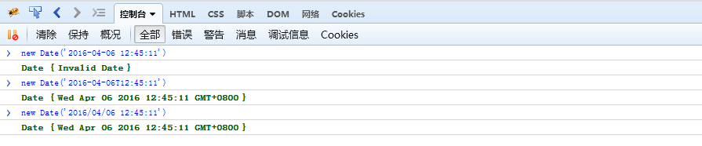

Javascript 浏览器兼容
Firefox 定义日期new Date()兼容问题
今天改bug时遇到一个问题，在火狐浏览器中，通过
var date = new Date('2016-04-06 12:45:11');这个方式定义的Date对象是无效的，出现Date {Invalid Date}错误，而在谷歌浏览器中不存在这样的问题。
查阅资料发现，Firefox中和Chrome中均可以用以下方式创建Date对象：1
2var date = new Date('2016/04/06 12:45:11');
var date = new Date('2016-04-06T12:45:11');Firefox中测试结果：

因此问题解决方案如下：1
2
3var dateString = '2016/04/06 12:45:11';
var date1 = new Date(dateString.replace(/\s/,'T');
var date2 = new Date(dateString.replace(/-/g,'/');
Ubuntu修改root密码
Ubuntu版本14.04.4 LTS
安装Ubuntu后一直没有使用root账户登录过，今天使用root登录发现无法登录，安装的时候没有给root账号设置过密码。查阅资料后发现可以通过以下方式来启用root账户：
在终端执行命令sudo passwd root，输入要修改的密码，然后就可以用root账号登录。
关于换行
- UNIX 行尾换行 \n
- Windows 行尾换行回车 \n\r
- Mac 行尾回车 \r
Unix/Mac系统下的文件在Windows里打开的话，所有文字会变成一行；而Windows里的文件在Unix/Mac下打开的话，在每行的结尾可能会多出一个^M符号。